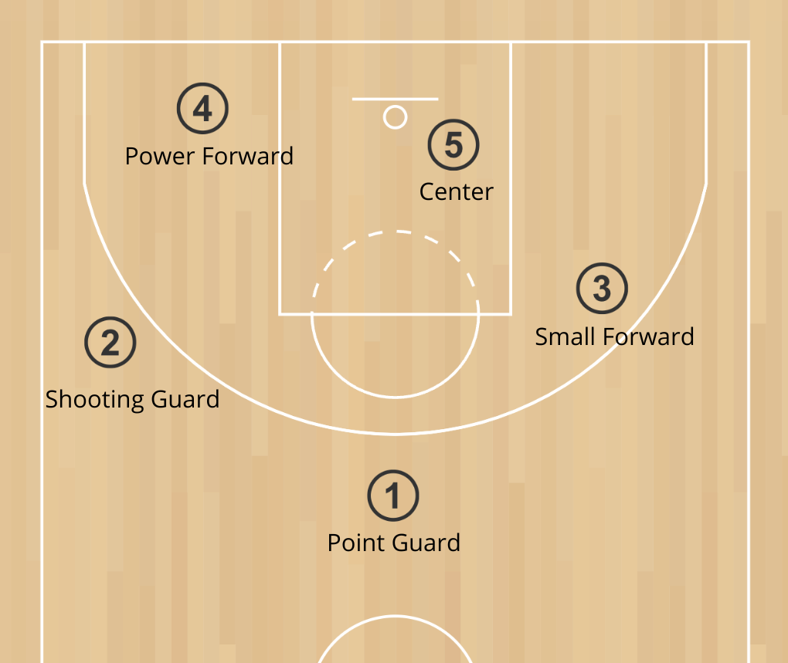

Football is one of the world's most popular outdoor games. There are 17 laws that govern how the game is to be played so that it is fair to all players taking part in a football game. The most basic rule is that a player needs to move the ball towards the opponents’ goal line using any body part except the hands and arms. The Laws of the Game were created in 1863 and were updated with time. But what are the main football rules and regulations?
The main objective in a football match is to score more goals than the opponent team. Whichever team has more goals at the end of 90 minutes is declared the winner of the football match. If both teams score an equal number of goals, then either a draw is declared or the game goes into extra time or a penalty shootout, depending on the competition.
It is one of the most crucial football rules for the game. 1.A football match has two teams playing against each other. 2.The number of players in each team should be a minimum of 7 and must not exceed 11. 3.Four categories of players are there in a football match. Goalkeeper, defenders, midfielders, and forwards. 4.There must be one player designated as a goalkeeper in each team. If a goalkeeper is unavailable/suspended, any position player can become the designated goalkeeper. 5.Each team is led by a captain, whose one official responsibility is to represent the team at the coin toss before the kick-off or penalty kicks. 6.Winning the coin toss means your team gets to choose the initial direction of play. The direction of both teams switches after half time before the second half starts. The team that loses the toss does the first kick-off and starts.
The player formation is not exactly one of the football rules, it is a football strategy that constitutes how players in a team position themselves in relation to each other on the football field. 1.A player's position in a formation typically defines whether a player has a more defensive or attacking role. 2.Formations are described by usually three or four numbers in order to denote how many players are in each row of the formation, from defense to offense. For example, the "4–5–1" formation has four defenders, five midfielders, and a single forward. 3.Different formations are used depending on how a team wishes to play in a football match. A team may switch formations between or during the game for tactical reasons.

There are two disciplinary cards in football: Red and Yellow cards. These colors were first introduced at the 1970 Football World Cup and are in use ever since. 1.Yellow means the player is only cautioned and given a warning 2.Red card means dismissal from the game for that particular player 3.Two yellow cards in the same match for one player also result in the player’s dismissal
Basketball began with its invention in 1891 in Springfield, Massachusetts, by Canadian physical education instructor James Naismith as a less injury-prone sport than football. Naismith was a 31-year-old graduate student when he created the indoor sport to keep athletes indoors during the winters.[1] The game became established fairly quickly and grew very popular as the 20th century progressed, first in America and then in other parts of the world. After basketball became established in American colleges, the professional game followed. The American National Basketball Association (NBA), established in 1946, grew to a multibillion-dollar enterprise by the end of the century, and basketball became an integral part of American culture
A game similar to basketball is mentioned in a 1591 book published in Frankfurt am Main that reports on the lifestyles and customs of coastal North American residents, Wahrhafftige Abconterfaytung der Wilden.[2] Among other things, a game of skill is described in which balls must be thrown against a target woven from twigs, mounted high on a pole in the middle of a large playing field. There's a small reward for the player if the target is being hit.[3] The game of basketball as it is known today was created by Dr. James Naismith in December 1891 in Springfield, Massachusetts, to condition young athletes during cold months. Naismith was a physical education instructor at YMCA International Training School (now known as Springfield College) in Springfield, Massachusetts. Upon the request of his boss, Naismith was tasked to create an indoor sports game to help athletes keep in shape in cold weather.[1] It consisted of peach baskets and a soccer style ball. He published 13 rules for the new game. He divided his class of eighteen into two teams of nine players each and set about to teach them the basics of his new game. The objective of the game was to throw the basketball into the fruit baskets nailed to the lower railing of the gym balcony. Every time a point was scored, the game was halted so the janitor could bring out a ladder and retrieve the ball. After a while, the bottoms of the fruit baskets were removed. The first public basketball game was played in Springfield, Massachusetts, on March 11, 1892.[4]
On December 21, 1891, Naismith published rules for a new game using five basic ideas and thirteen rules. [6] That day, he asked his class to play a match in the Armory Street court: 9 versus 9, using a soccer ball and two peach baskets. Frank Mahan, one of his students, was not so happy. He just said: "Harrumph. Another new game".[7] Someone proposed to call it "Naismith Game", but he suggested "We have a ball and a basket: why don’t we call it basketball?"[8] The eighteen players were John G. Thompson, Eugene S. Libby, Edwin P. Ruggles, William R. Chase, T. Duncan Patton, Frank Mahan, Finlay G. MacDonald, William H. Davis and Lyman Archibald, who defeated George Weller, Wilbert Carey, Ernest Hildner, Raymond Kaighn, Genzabaro Ishikawa, Benjamin S. French, Franklin Barnes, George Day and Henry Gelan 1–0.[9] The goal was scored by Chase.[10] There were other differences between Naismith's first idea and the game played today. The peach baskets were closed, and balls had to be retrieved manually, until a small hole was put in the bottom of the peach basket to poke the ball out using a stick. Only in 1906 were metal hoops, nets and backboards introduced. In 1894 the soccer ball was replaced by a ball Naismith contacted Spalding to make.[11][12]
Basketball is a game with something for everyone. It is totally inclusive for all shapes, sizes, interests and abilities. In this section you will find links to search tools for playing opportunities in England and Scotland – simply key in your location and we will do the hard work for you. It doesn’t matter if you are looking for a club, training session or just simply turn up and play session! If you want to be part of the basketball community without getting quite as physical then there are other opportunities too. Basketball provides lots of opportunities to get stuck in on and off the court, no matter what you want to achieve including coaching, officiating and volunteering.
If you want to play basketball for fun, you have the possibility of playing on your own. But you can also play team games with either 1, 2, 3, 4 or 5 players on each teams. Teams can be mixed, with males and females, or not. On a competition level, a team is made up of 5 players playing on the court and 7 players sitting on the bench that can be used for substitutions during the whole period of the game.
Each player is assigned a position when playing. This position is usually determined by the height of the player. The tallest player on the team usually plays “center” also known as “position 5”, while the medium size ones play “forwards” / “position 3 and 4”. The shortest players then play “guards” / “position 1 and 2”.
A player scores when he manages to throw the ball into the basket, with the ball passing through the basket from above the hoop. Scoring a basket increases the team’s score by 3, 2 or one point. If the player successfully shoots from outside of the 3 points line, the basket is worth 3 points, otherwise it is worth 2 points. It is also possible to score one point when shooting from the free throw line, after a foul for instance.
The history of rugby union follows from various football games long before the 19th century, but it was not until the middle of that century that the rules were formulated and codified. The code of football later known as rugby union can be traced to three events: the first set of written rules in 1845, the Blackheath Club's decision to leave the Football Association in 1863 and the formation of the Rugby Football Union in 1871. The code was originally known simply as "rugby football". It was not until a schism in 1895, over the payment of players, which resulted in the formation of the separate code of rugby league, that the name "rugby union" was used to differentiate the original rugby code. For most of its history, rugby was a strictly amateur football code, and the sport's administrators frequently imposed bans and restrictions on players who they viewed as professional. It was not until 1995 that rugby union was declared an "open" game, and thus professionalism was sanctioned by the code's governing body, World Rugby—then known as the International Rugby Football Board (IRFB).
"Football" as a game was well established by 1803 at Rugby school and by the 1830s, "running in" with the ball in hand was allowed but subject to hacking and "collaring".[1] Playing football has been a long tradition in England and versions of football had probably been played at Rugby School for 200 years before three boys published the first set of written rules in 1845. The rules had always been determined by the pupils instead of the masters and they were frequently modified with each new intake. Rule changes, such as the legality of carrying or running with the ball, were often agreed shortly before the commencement of a game. There were thus no formal rules for football during the time that William Webb Ellis was at the school (1816–25) and the story of the boy "who with a fine disregard for the rules of football as played in his time, first took the ball in his arms and ran with it" in 1823 is apocryphal. The story first appeared in 1876, some four years after the death of Webb Ellis, and is attributed to a local antiquarian and former Rugbeian Matthew Bloxam. Bloxam was not a contemporary of Webb Ellis and vaguely quoted an unnamed person as informing him of the incident that had supposedly happened 53 years earlier. The story has been dismissed as unlikely since an official investigation by the Old Rugbeian Society in 1895. However, the cup for the Rugby World Cup is named the Webb Ellis trophy in his honour, and a plaque at the school commemorates the "achievement".[citation needed] Rugby football has strong claims to the world's first and oldest "football club": the Guy's Hospital Football Club, formed in London in 1843, by old boys from Rugby School. Around the English-speaking world, a number of other clubs formed to play games based on the Rugby School rules. One of these, Dublin University Football Club, founded in 1854, has arguably become the world's oldest surviving football club in any code. The Blackheath Football Club, in London, founded in 1858 is the oldest surviving non-university/school rugby club. Cheltenham College 1844, Sherborne School 1846 and Durham School 1850 are the oldest documented school's clubs.[need quotation to verify] Francis Crombie and Alexander Crombie introduced rugby into Scotland via Durham School in 1854.[5] The first rugby club in Wales was at St David's College, Lampeter, founded in around 1850 by Rowland Williams.[6]
Until the late 1860s, rugby was played with a leather ball with an inner-bladder made of a pig's bladder. The shape of the bladder imparted a vaguely oval shape to the ball, but they were far more spherical in shape than they are today. A quote from Tom Brown's Schooldays, written by Thomas Hughes (who attended Rugby School from 1834 to 1842), shows that the ball was not a complete sphere:[citation needed] the new ball you may see lie there, quite by itself,in the middle,pointing towards the school goal In 1851, a football of the kind used at Rugby School was exhibited at the first World's Fair, the Great Exhibition in London. This ball can still be seen at the Webb Ellis Rugby Football Museum and it has a definite ovoid shape. In 1862, Richard Lindon introduced rubber bladders and, because of the pliability of the rubber, balls could be manufactured with a more pronounced shape. As an oval ball was easier to handle, a gradual flattening of the ball continued over the years as the emphasis of the game moved towards handling and away from dribbling. In 1892, the RFU included compulsory dimensions for the ball for the first time in the Laws of the Game. In the 1980s, leather-encased balls, which were prone to water-logging, were replaced with balls encased in synthetic waterproof materials.[7]

The game is broken down into two 40 minute halves with a 10 minute rest period in between. The game carries no stoppage time and will end exactly on 80 minutes. Each team can start with 15 players and up to 7 substitutes. Players that have left the field are only allowed to return if they have been treated for an injury. The field must be roughly 100 metres long and 70 metres wide with a minimum of a 10 metre dead ball area. The H shaped goal needs to be 6 metres wide with no restrictions on height. The field consist of the following markings; half way line, 5 metre line, 22 metre line, 10 metre line and dead ball line. Also included is a centre spot for restarting the game after a try, penalty or drop goal has been scored. The game must have one referee and two touch judges. It’s the referee’s job to time keep, make decisions throughout the game and keep order on the field. The two touch judges can assist the referee with decisions and also notify the referee when players are in touch (out of playing boundaries). The game will stop if a player is fouled, the ball goes out of play or a try or drop goal is scored. The defending team must tackle a player by grabbing a hold and pulling them to the floor. A tackle cannot be made above shoulder height and doing so will cause the referee to award a foul. Once the ball goes into touch a line out is called. Up to 7 players can enter a line out and any of these players can be lifted in order to catch the ball being thrown in. Both teams can compete to win the ball. A successful conversion, penalty or kick at goal only occurs when the player manages to kick the ball through the top section of the goal. If a player is unsuccessful the ball is still in play until it crosses one of the playing fields boundaries. Attacking players must remain behind the ball whilst active or run the risk of being called offside. Players not interfering with play can be in front of ball but must get back behind the ball before then again interfering with play.
The object of the game is score more points than your opponents in the 80 minute time frame allotted for each rugby match. The team with the greater number of points at full time is announced as the winner. Games may end as a draw. The team with the ball must move the ball up the field in ‘phases of play’. The ball can never be passed forwards but players can run forwards with the ball or kick the ball forward to chase it down. The opposing team needs to stop the attacking team by tackling and trying to retain the ball.
Each rugby team will consist of 15 players. The team is split into two groups known as forwards and backs. There are 8 forwards (positions include Hooker, Prop, Second Row, Flanker and Number Eight) and 7 backs (positions include Scrum Half, Fly Half, Inside Centre, Outside Centre, Wingers and a Full Back). The pitch is split up into three sections; one main playing area which must not exceed 100 metres and two dead goal areas which can range from 10 to 20 m. The pitch must then be equal to 70 metres wide. The goal posts are in an ‘H’ shape and are roughly 5 to 6 meters apart with no restrictions on height. Studded boots can be worn along with gum shields, head guards, shoulder pads and shin pads. Each team must wear the same coloured jerseys with matching shorts and socks.
1.A try is awarded when a player places the ball down in their opponent’s dead ball area behind the goal. 5 points are awarded. 2.A conversion is a free kick that the team is awarded after a try to earn 2 bonus points. A successful kick needs to pass between the upper posts and top bar on the goal. 3.A penalty kick will gain a team 3 points and is awarded to a team when the opposing team causes an infringement. 4.A drop goal can be kicked out of the hand as long as the ball bounces first and can earn a team 3 points.